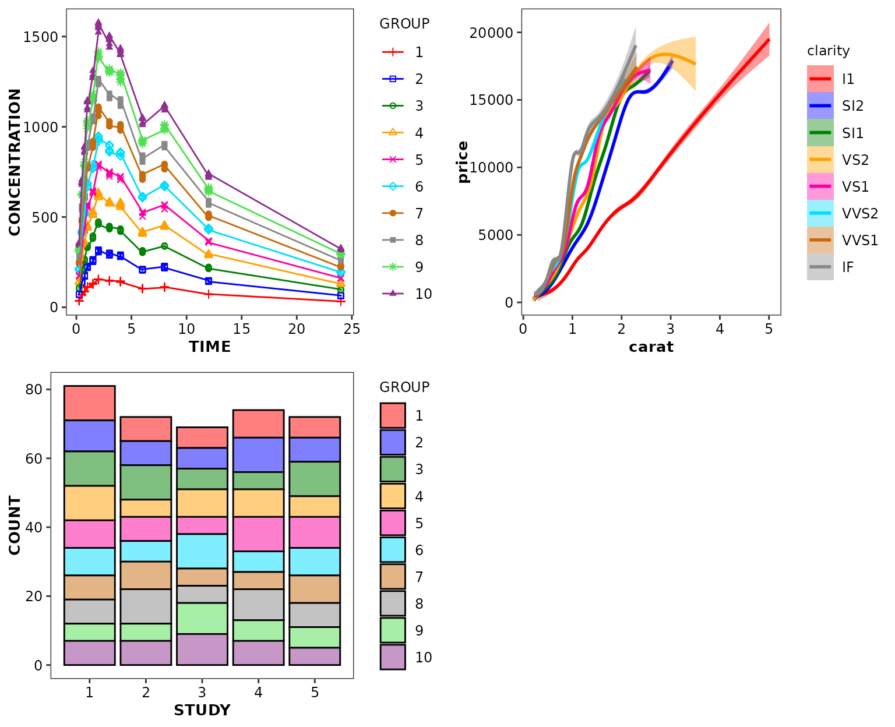
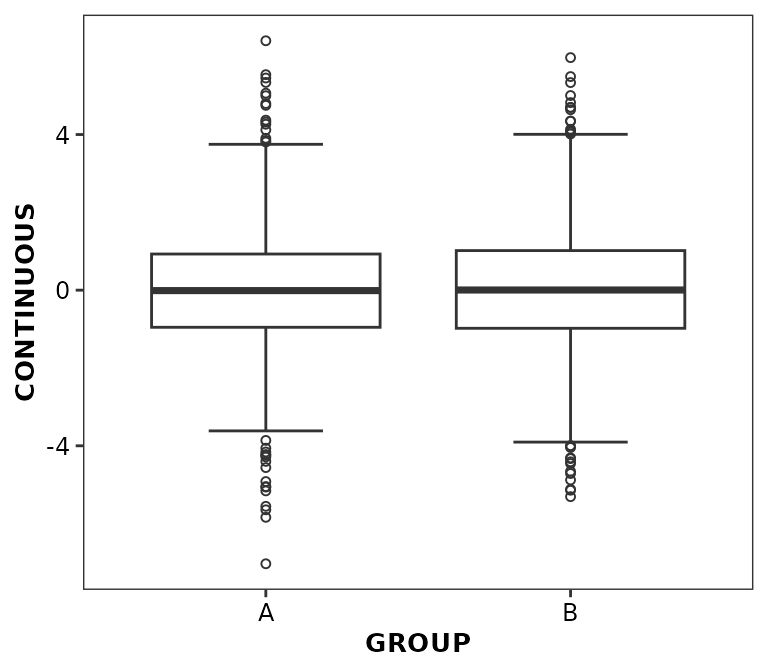
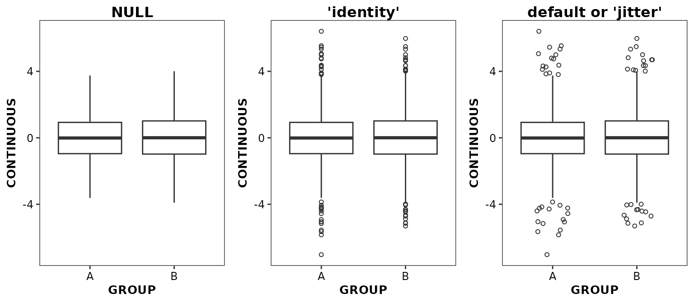
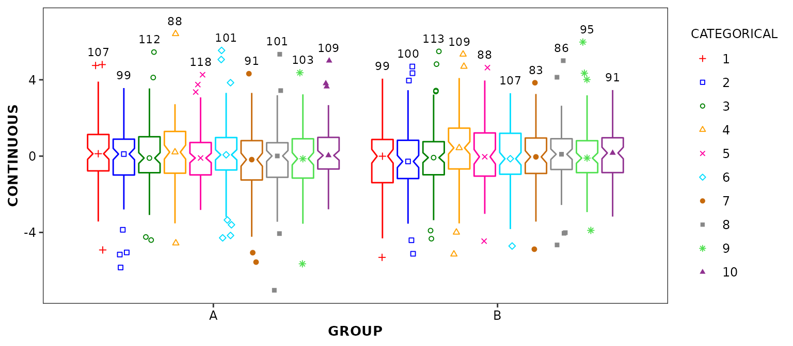
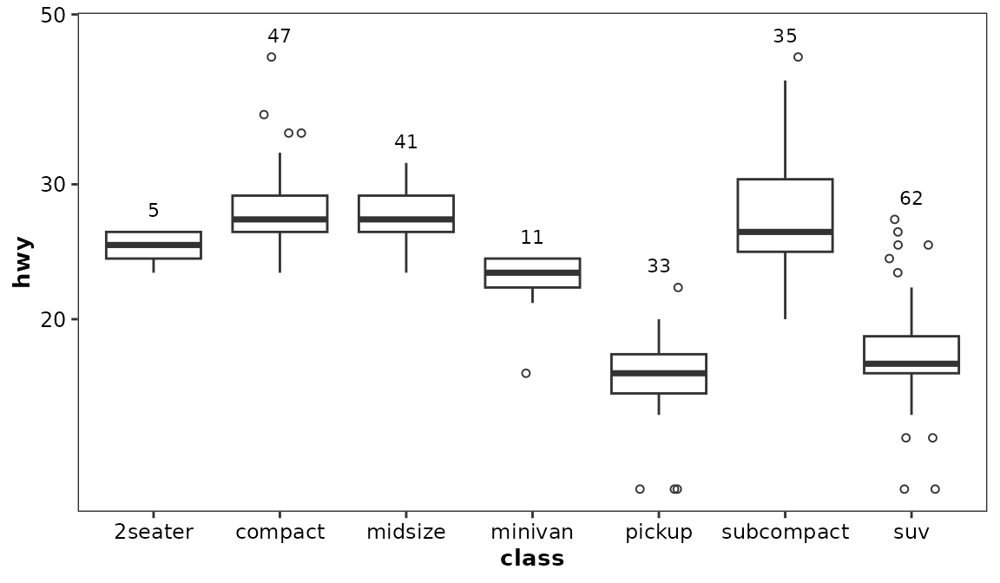
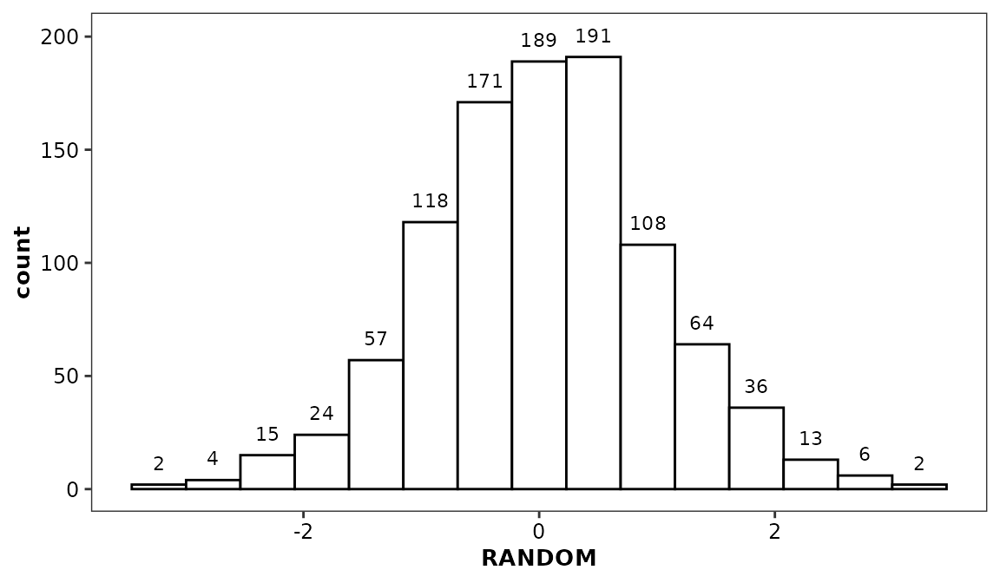
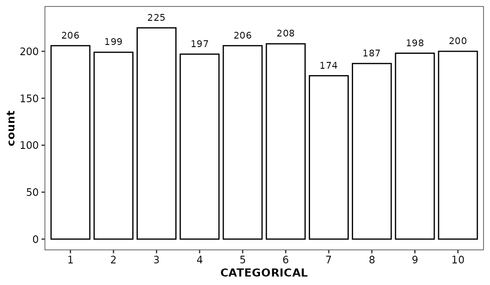

Introduction to ggcognigen
Nash Delcamp, Sebastien Bihorel
for Cognigen, a SimulationsPlus Company
Source:vignettes/intro.Rmd
intro.Rmdggcognigen is a package intended to provide graphical
standards for the creation of plots at Cognigen using a plotting
workflow based upon the ggplot2 package.
Installing ggcognigen
Installation of the ggcognigen package can be performed
using the source code provided in the compressed .tar.gz file which
Cognigen sent you. For instance:
install.packages('ggcognigen_$version$.tar.gz', type = 'source')Dependencies of the ggcognigen package are listed in the
package DESCRIPTION file.
Outside of Cognigen, it is the responsibility of the user to test and
validate ggcognigen.
Loading ggcognigen
After installation, users can load the package using the following command:
library(ggcognigen)
#> Loading ggcognigen Version 1.2.0.9000
#>
#> Default style set to `cognigen_style()`
#> Default theme set to `theme_cognigen()`Using ggcognigen themes
A plain, Cognigen-specific theme, is applied by default when the
ggcognigen package is loaded.
library(ggplot2)
ggplot(data = diamonds) +
aes(x = carat, y = price) +
geom_point() +
facet_wrap(vars(clarity))
If a different default theme has been applied (for instance, using
ggplot2::reset_theme_settings()), the Cognigen theme can be
explicitly applied by including theme_cognigen() in your
ggplot calls.
ggplot2::reset_theme_settings()
ggpubr::ggarrange(
ggplot(data = xydata) +
aes(x = TIME, y = CONCENTRATION) +
geom_point() +
ggtitle('Default ggplot2 theme'),
ggplot(data = boxdata) +
aes(x = GROUP, y = CONTINUOUS) +
geom_boxplot() +
theme_cognigen() +
ggtitle('Cognigen theme'),
nrow = 1,
ncol = 2
)To add grid lines in the background of the plot panel, use
theme_cognigen_grid().
ggplot(data = diamonds) +
aes(x = carat, y = price) +
geom_point() +
facet_wrap(vars(clarity)) +
theme_cognigen_grid()If needed, the Cognigen-specific themes can be set to default using the following call:
ggplot2::theme_set(theme_cognigen())Using the ggcognigen graphical style
set_default_style()
When data are not stratified by any aesthetics within a panel,
default geom styling applies. When ggcognigen is loaded,
set_default_style() is automatically called in order to
apply the default Cognigen graphical style. This function applies the
Cognigen styling to all types of geoms (note that outlier styling in
geom_boxplot() is not controlled by aesthetics and should
be changed manually; alternatively, use
geom_boxplot2()):
ggpubr::ggarrange(
ggplot(data = xydata) +
aes(x = TIME, y = CONCENTRATION) +
geom_point(),
ggplot(data = boxdata) +
aes(x = GROUP, y = CONTINUOUS) +
geom_boxplot(),
nrow = 1,
ncol = 2
)One can revert to ggplot2 default styling by calling
set_default_style() as follows (note that this call was
made in the background for the purpose of creation of plots in the theme section above):
# Revert to ggplot2 styling
set_default_style(style = 'ggplot2')One can also select an alternative default style by combining
set_default_style() and read_style() (see section below)
set_default_style(style = read_style('/path/to/my/style.json'))
scale_discrete_cognigen()
When data are stratified within a panel,
scale_discrete_cognigen() can be added to
ggplot2 object in order to apply the colors, symbols, and
line styles from the default Cognigen graphical style. This function
accepts a geom argument which should be aligned with the
type of geom being plotted, if it is not a geom_point() (as
this is the default geom used in
scale_discrete_cognigen())
ggpubr::ggarrange(
ggplot(data = xydata) +
aes(x = TIME, y = CONCENTRATION, colour = GROUP, shape = GROUP) +
geom_point() +
geom_line() +
scale_discrete_cognigen(),
ggplot(data = diamonds) +
aes(x = carat, y = price, colour = clarity, shape = clarity, fill = clarity) +
geom_smooth() +
scale_discrete_cognigen(),
ggplot(data = bardata) +
aes(x = STUDY, y = COUNT, fill = GROUP) +
geom_bar(stat = 'identity', position = 'stack', alpha = 1) +
scale_discrete_cognigen(geom = 'bar'),
nrow = 2,
ncol = 2
)
#> `geom_smooth()` using method = 'gam' and formula = 'y ~ s(x, bs = "cs")'
scale_discrete_cognigen() accepts multiple
arguments:
- n: defines the number of distinct data groups in the
discrete scale. It is only important to set this argument if there are
> 10 distinct groups; in this case, graphical elements get
recycled.
- geom: defines the type of geom on which the scale will
apply.
- style: a list of graphical settings set to
cognigen_style by default (see next section).
- grayscale: set this argument to TRUE to
apply graphical settings using grayscale colors.
* for scatter plots, it is important to use both colour and
fill aesthetics so that the different data groups can be
distinguishable when the plot is printed in black and white.
scale_continuous_cognigen()
For continuous colour or fill aesthetics,
scale_continuous_cognigen() can be added to a
ggplot2 object to use a purple gradient.
ggpubr::ggarrange(
ggplot(diamonds) +
aes(x = carat, y = depth) +
geom_point(aes(colour = price), pch = 19) +
scale_continuous_cognigen() +
ggtitle('continuous color'),
ggplot(faithfuld, aes(waiting, eruptions)) +
geom_raster(aes(fill = density)) +
scale_continuous_cognigen() +
ggtitle('continuous fill'),
nrow = 2,
ncol = 1
)
cognigen_style()
By default, the style argument of
scale_discrete_cognigen() is set to
cognigen_style(). cognigen_style() returns a
large list object which contains all the settings defining the Cognigen
graphical standards and which has the following structure:
str(cognigen_style())
#> List of 16
#> $ scatter :List of 2
#> ..$ color :'data.frame': 11 obs. of 6 variables:
#> .. ..$ pch : int [1:11] 1 3 0 1 2 4 5 19 15 8 ...
#> .. ..$ col : chr [1:11] "#5B5B5B" "#FF0000" "#0000FF" "#008000" ...
#> .. ..$ fill: chr [1:11] "#5B5B5B" "#FF0000" "#0000FF" "#008000" ...
#> .. ..$ cex : num [1:11] 0.45 0.5 0.5 0.5 0.45 0.5 0.45 0.5 0.5 0.45 ...
#> .. ..$ lty : chr [1:11] "solid" "solid" "dashed" "F8" ...
#> .. ..$ lwd : num [1:11] 1.5 1.5 1.5 1.5 1.5 1.5 1.5 1.5 1.5 1.5 ...
#> ..$ grayscale:'data.frame': 11 obs. of 6 variables:
#> .. ..$ pch : int [1:11] 1 3 0 1 2 4 5 19 15 8 ...
#> .. ..$ col : chr [1:11] "#5B5B5B" "#363636" "#141414" "#5B5B5B" ...
#> .. ..$ fill: chr [1:11] "#5B5B5B" "#363636" "#141414" "#5B5B5B" ...
#> .. ..$ cex : num [1:11] 0.45 0.5 0.5 0.5 0.45 0.5 0.45 0.5 0.5 0.45 ...
#> .. ..$ lty : chr [1:11] "solid" "solid" "dashed" "F8" ...
#> .. ..$ lwd : num [1:11] 1.5 1.5 1.5 1.5 1.5 1.5 1.5 1.5 1.5 1.5 ...
#> $ ramp :List of 2
#> ..$ color :'data.frame': 10 obs. of 4 variables:
#> .. ..$ pch : int [1:10] 1 NA NA NA NA NA NA NA NA NA
#> .. ..$ col : chr [1:10] "#9E0142" "#D53E4F" "#F46D43" "#FDAE61" ...
#> .. ..$ fill: chr [1:10] "transparent" NA NA NA ...
#> .. ..$ cex : num [1:10] 0.5 NA NA NA NA NA NA NA NA NA
#> ..$ grayscale:'data.frame': 10 obs. of 4 variables:
#> .. ..$ pch : int [1:10] 1 NA NA NA NA NA NA NA NA NA
#> .. ..$ col : chr [1:10] "#D8D8D8" "#C0C0C0" "#A8A8A8" "#909090" ...
#> .. ..$ fill: chr [1:10] "transparent" NA NA NA ...
#> .. ..$ cex : num [1:10] 0.5 NA NA NA NA NA NA NA NA NA
#> $ bar :List of 2
#> ..$ color :'data.frame': 11 obs. of 2 variables:
#> .. ..$ col : chr [1:11] "#FFFFFF" "#FF7F7F" "#7F7FFF" "#7FBF7F" ...
#> .. ..$ border: chr [1:11] "#000000" "#000000" "#000000" "#000000" ...
#> ..$ grayscale:'data.frame': 11 obs. of 2 variables:
#> .. ..$ col : chr [1:11] "#FFFFFF" "#363636" "#141414" "#5B5B5B" ...
#> .. ..$ border: chr [1:11] "#000000" "#000000" "#000000" "#000000" ...
#> $ box.sym :List of 2
#> ..$ color :'data.frame': 11 obs. of 4 variables:
#> .. ..$ bwdotpch : chr [1:11] "|" "3" "0" "1" ...
#> .. ..$ bwdotcol : chr [1:11] "#000000" "#FF0000" "#0000FF" "#008000" ...
#> .. ..$ bwdotfill: chr [1:11] "#000000" "#FF0000" "#0000FF" "#008000" ...
#> .. ..$ bwdotcex : num [1:11] 0.45 0.45 0.45 0.45 0.45 0.45 0.45 0.45 0.45 0.45 ...
#> ..$ grayscale:'data.frame': 11 obs. of 4 variables:
#> .. ..$ bwdotpch : chr [1:11] "|" "3" "0" "1" ...
#> .. ..$ bwdotcol : chr [1:11] "#000000" "#363636" "#141414" "#5B5B5B" ...
#> .. ..$ bwdotfill: chr [1:11] "#000000" "#363636" "#141414" "#5B5B5B" ...
#> .. ..$ bwdotcex : num [1:11] 0.45 0.45 0.45 0.45 0.45 0.45 0.45 0.45 0.45 0.45 ...
#> $ box.rec :List of 2
#> ..$ color :'data.frame': 10 obs. of 1 variable:
#> .. ..$ value: chr [1:10] "#000000" "solid" "1" "#000000" ...
#> ..$ grayscale:'data.frame': 10 obs. of 1 variable:
#> .. ..$ value: chr [1:10] "#000000" "solid" "1" "#000000" ...
#> $ hist :List of 2
#> ..$ color :'data.frame': 7 obs. of 1 variable:
#> .. ..$ value: chr [1:7] "#FFFFFF" "#000000" "solid" "1" ...
#> ..$ grayscale:'data.frame': 7 obs. of 1 variable:
#> .. ..$ value: chr [1:7] "#FFFFFF" "#000000" "solid" "1" ...
#> $ hist.dens :List of 2
#> ..$ color :'data.frame': 11 obs. of 7 variables:
#> .. ..$ col : chr [1:11] "#000000" "#FF0000" "#0000FF" "#008000" ...
#> .. ..$ fill : chr [1:11] "#FFFFFF" "#FF7F7F" "#7F7FFF" "#7FBF7F" ...
#> .. ..$ pch : int [1:11] 1 3 0 1 2 4 5 19 15 8 ...
#> .. ..$ cex : num [1:11] 0.45 0.5 0.5 0.5 0.45 0.5 0.45 0.5 0.5 0.45 ...
#> .. ..$ hidcol: chr [1:11] "#0066FF" NA NA NA ...
#> .. ..$ hidlty: chr [1:11] "solid" "solid" "dashed" "F8" ...
#> .. ..$ hidlwd: num [1:11] 1.5 1.5 1.5 1.5 1.5 1.5 1.5 1.5 1.5 1.5 ...
#> ..$ grayscale:'data.frame': 11 obs. of 7 variables:
#> .. ..$ col : chr [1:11] "#000000" "#363636" "#141414" "#5B5B5B" ...
#> .. ..$ fill : chr [1:11] "#FFFFFF" "#363636" "#141414" "#5B5B5B" ...
#> .. ..$ pch : int [1:11] 1 3 0 1 2 4 5 19 15 8 ...
#> .. ..$ cex : num [1:11] 0.45 0.5 0.5 0.5 0.45 0.5 0.45 0.5 0.5 0.45 ...
#> .. ..$ hidcol: chr [1:11] "#5D5D5D" NA NA NA ...
#> .. ..$ hidlty: chr [1:11] "solid" "solid" "dashed" "F8" ...
#> .. ..$ hidlwd: num [1:11] 1.5 1.5 1.5 1.5 1.5 1.5 1.5 1.5 1.5 1.5 ...
#> $ vpc :List of 2
#> ..$ color :'data.frame': 25 obs. of 3 variables:
#> .. ..$ value : chr [1:25] "1" "#5B5B5B" "0.5" "solid" ...
#> .. ..$ value2: chr [1:25] "3" "#5B5B5B" "0.5" "solid" ...
#> .. ..$ value3: chr [1:25] "3" "#5B5B5B" "0.5" "solid" ...
#> ..$ grayscale:'data.frame': 25 obs. of 3 variables:
#> .. ..$ value : chr [1:25] "3" "#5B5B5B" "0.5" "solid" ...
#> .. ..$ value2: chr [1:25] "3" "#5B5B5B" "0.5" "dotted" ...
#> .. ..$ value3: chr [1:25] "3" "#5B5B5B" "0.5" "solid" ...
#> $ vpc.style :'data.frame': 22 obs. of 5 variables:
#> ..$ style : int [1:22] 1 2 3 4 5 6 7 8 9 10 ...
#> ..$ type : chr [1:22] "p" "p" "p" "p" ...
#> ..$ PI.real: chr [1:22] NA NA NA "lines" ...
#> ..$ PI : chr [1:22] "lines" "lines" "area" "lines" ...
#> ..$ PI.ci : chr [1:22] NA "area" NA NA ...
#> $ vpc.tte.style:'data.frame': 24 obs. of 5 variables:
#> ..$ style : int [1:24] 1 2 3 4 5 6 7 8 9 10 ...
#> ..$ real.ci : logi [1:24] FALSE FALSE FALSE FALSE FALSE FALSE ...
#> ..$ median.line: logi [1:24] FALSE FALSE FALSE TRUE TRUE TRUE ...
#> ..$ ci.area : logi [1:24] TRUE FALSE TRUE TRUE FALSE TRUE ...
#> ..$ ci.lines : logi [1:24] FALSE TRUE TRUE FALSE TRUE TRUE ...
#> $ spline :List of 2
#> ..$ color :'data.frame': 11 obs. of 4 variables:
#> .. ..$ smcol1: chr [1:11] "#0066FF" NA NA NA ...
#> .. ..$ smcol2: chr [1:11] "#7F7F7F" "#FF7F7F" "#7F7FFF" "#7FBF7F" ...
#> .. ..$ smlty : chr [1:11] "solid" "solid" "dashed" "F8" ...
#> .. ..$ smlwd : num [1:11] 1.5 1.5 1.5 1.5 1.5 1.5 1.5 1.5 1.5 1.5 ...
#> ..$ grayscale:'data.frame': 11 obs. of 4 variables:
#> .. ..$ smcol1: chr [1:11] "#B2B2B2" NA NA NA ...
#> .. ..$ smcol2: chr [1:11] "#7F7F7F" "#9A9A9A" "#898989" "#ADADAD" ...
#> .. ..$ smlty : chr [1:11] "solid" "solid" "dashed" "F8" ...
#> .. ..$ smlwd : num [1:11] 1.5 1.5 1.5 1.5 1.5 1.5 1.5 1.5 1.5 1.5 ...
#> $ hline :List of 2
#> ..$ color :'data.frame': 10 obs. of 4 variables:
#> .. ..$ hlinecol1: chr [1:10] "#FF0000" "#FF0000" "#FF0000" "#FF0000" ...
#> .. ..$ hlinecol2: chr [1:10] "#000000" "#000000" "#000000" "#000000" ...
#> .. ..$ hlinelty : chr [1:10] "solid" "solid" "solid" "solid" ...
#> .. ..$ hlinelwd : num [1:10] 1 1 1 1 1 1 1 1 1 1
#> ..$ grayscale:'data.frame': 10 obs. of 4 variables:
#> .. ..$ hlinecol1: chr [1:10] "#363636" "#363636" "#363636" "#363636" ...
#> .. ..$ hlinecol2: chr [1:10] "#000000" "#000000" "#000000" "#000000" ...
#> .. ..$ hlinelty : chr [1:10] "solid" "solid" "solid" "solid" ...
#> .. ..$ hlinelwd : num [1:10] 1 1 1 1 1 1 1 1 1 1
#> $ vline :List of 2
#> ..$ color :'data.frame': 10 obs. of 4 variables:
#> .. ..$ vlinecol1: chr [1:10] "#FF0000" "#FF0000" "#FF0000" "#FF0000" ...
#> .. ..$ vlinecol2: chr [1:10] "#000000" "#000000" "#000000" "#000000" ...
#> .. ..$ vlinelty : chr [1:10] "solid" "solid" "solid" "solid" ...
#> .. ..$ vlinelwd : num [1:10] 1 1 1 1 1 1 1 1 1 1
#> ..$ grayscale:'data.frame': 10 obs. of 4 variables:
#> .. ..$ vlinecol1: chr [1:10] "#363636" "#363636" "#363636" "#363636" ...
#> .. ..$ vlinecol2: chr [1:10] "#000000" "#000000" "#000000" "#000000" ...
#> .. ..$ vlinelty : chr [1:10] "solid" "solid" "solid" "solid" ...
#> .. ..$ vlinelwd : num [1:10] 1 1 1 1 1 1 1 1 1 1
#> $ abline :List of 2
#> ..$ color :'data.frame': 4 obs. of 1 variable:
#> .. ..$ value: chr [1:4] "#FF0000" "#000000" "solid" "1"
#> ..$ grayscale:'data.frame': 4 obs. of 1 variable:
#> .. ..$ value: chr [1:4] "#363636" "#000000" "solid" "1"
#> $ error :List of 2
#> ..$ color :'data.frame': 11 obs. of 10 variables:
#> .. ..$ errpch : int [1:11] 1 3 0 1 2 4 5 19 15 8 ...
#> .. ..$ errcol1 : chr [1:11] "#0066FF" NA NA NA ...
#> .. ..$ errcol2 : chr [1:11] "#000000" "#FF0000" "#0000FF" "#008000" ...
#> .. ..$ errcol3 : chr [1:11] "#7F7F7F" "#FF7F7F" "#7F7FFF" "#7FBF7F" ...
#> .. ..$ errfill : chr [1:11] "#000000" "#FF0000" "#0000FF" "#008000" ...
#> .. ..$ errcex : num [1:11] 0.45 0.5 0.5 0.5 0.45 0.5 0.45 0.5 0.5 0.45 ...
#> .. ..$ errlty : chr [1:11] "solid" "solid" "dashed" "F8" ...
#> .. ..$ errlwd : num [1:11] 1.5 1.5 1.5 1.5 1.5 1.5 1.5 1.5 1.5 1.5 ...
#> .. ..$ erralpha : num [1:11] 1 1 1 1 1 1 1 1 1 1 ...
#> .. ..$ erralpha.area: num [1:11] 0.25 0.25 0.25 0.25 0.25 0.25 0.25 0.25 0.25 0.25 ...
#> ..$ grayscale:'data.frame': 11 obs. of 10 variables:
#> .. ..$ errpch : int [1:11] 1 3 0 1 2 4 5 19 15 8 ...
#> .. ..$ errcol1 : chr [1:11] "#B2B2B2" NA NA NA ...
#> .. ..$ errcol2 : chr [1:11] "#000000" "#363636" "#141414" "#5B5B5B" ...
#> .. ..$ errcol3 : chr [1:11] "#7F7F7F" "#9A9A9A" "#898989" "#ADADAD" ...
#> .. ..$ errfill : chr [1:11] "#000000" "#363636" "#141414" "#5B5B5B" ...
#> .. ..$ errcex : num [1:11] 0.45 0.5 0.5 0.5 0.45 0.5 0.45 0.5 0.5 0.45 ...
#> .. ..$ errlty : chr [1:11] "solid" "solid" "dashed" "F8" ...
#> .. ..$ errlwd : num [1:11] 1.5 1.5 1.5 1.5 1.5 1.5 1.5 1.5 1.5 1.5 ...
#> .. ..$ erralpha : num [1:11] 1 1 1 1 1 1 1 1 1 1 ...
#> .. ..$ erralpha.area: num [1:11] 0.25 0.25 0.25 0.25 0.25 0.25 0.25 0.25 0.25 0.25 ...
#> $ background :List of 2
#> ..$ color :'data.frame': 4 obs. of 1 variable:
#> .. ..$ value: chr [1:4] "#FFFFFF" "#DDDDDD" "#FFFFFF" "#000000"
#> ..$ grayscale:'data.frame': 4 obs. of 1 variable:
#> .. ..$ value: chr [1:4] "#FFFFFF" "#DDDDDD" "#FFFFFF" "#000000"Note that each level contains a color and a
grayscale sub-level, which provides settings intended for
use in colored or grayscale plots respectively. Since this is a typical
R list, any subset method applicable to lists will allow the extraction
of particular portion of this information.
style <- cognigen_style()
style$scatter$color$lty
#> [1] "solid" "solid" "dashed" "F8" "dotdash" "22848222"
#> [7] "F313" "solid" "dashed" "F8" "dotdash"
style$bar$grayscale$col
#> [1] "#FFFFFF" "#363636" "#141414" "#5B5B5B" "#A7A7A7" "#424242" "#B1B1B1"
#> [8] "#767676" "#888888" "#BEBEBE" "#4C4C4C"This collection of settings was initially designed for the graphing
workflows implemented in the Cognigen KIWI
platform for modeling & simulation and contains information that
is relevant to a ggplot2-based workflow and some that is
not. Relevant information is automatically extracted by
scale_discrete_cognigen().
cognigen_purple_style()
cognigen_purple_style() is an alternative graphical
style to cognigen_style(). It is intended to provide
graphical settings based upon a single color hue, primarily to denote
the change in a ordered series of categories.
ggpubr::ggarrange(
ggplot(data = xydata) +
aes(x = TIME, y = CONCENTRATION, colour = GROUP, shape = GROUP) +
geom_point() +
geom_line() +
scale_discrete_cognigen(style = cognigen_purple_style()),
ggplot(data = diamonds) +
aes(x = carat, y = price, colour = clarity, shape = clarity, fill = clarity) +
geom_smooth() +
scale_discrete_cognigen(style = cognigen_purple_style()),
ggplot(data = bardata) +
aes(x = STUDY, y = COUNT, fill = GROUP) +
geom_bar(stat = 'identity', position = 'stack', alpha = 1) +
scale_discrete_cognigen(style = cognigen_purple_style(), geom = 'bar'),
nrow = 2,
ncol = 2
)
#> `geom_smooth()` using method = 'gam' and formula = 'y ~ s(x, bs = "cs")'
cognigen_purple_style() accepts 2 arguments:
-
nto define the number of categories to be displayed such that the lowest category is assigned the lightest color in the style hue, and the highest category is assigned the darkest color in the style hue; and -
gray.firstto indicate whether the 1st category should be displayed using the color gray, in a way to distinguish this category from all the other (for example, placebo vs multiple active dose).
ggpubr::ggarrange(
ggplot(data = xydata) +
aes(x = TIME, y = CONCENTRATION, colour = GROUP, shape = GROUP) +
geom_point() +
geom_line() +
scale_discrete_cognigen(style = cognigen_purple_style(gray.first = TRUE)),
ggplot(data = diamonds) +
aes(x = carat, y = price, colour = clarity, shape = clarity, fill = clarity) +
geom_smooth() +
scale_discrete_cognigen(style = cognigen_purple_style(n = 8)),
ggplot(data = bardata) +
aes(x = STUDY, y = COUNT, fill = GROUP) +
geom_bar(stat = 'identity', position = 'stack', alpha = 1) +
scale_discrete_cognigen(style = cognigen_purple_style(gray.first = TRUE), geom = 'bar'),
nrow = 2,
ncol = 2
)
#> Warning: n argument (10) was coerced to 9.
#> n argument (10) was coerced to 9.
#> `geom_smooth()` using method = 'gam' and formula = 'y ~ s(x, bs = "cs")'
read_style()
The style argument of
scale_discrete_cognigen() and
set_default_style() can also be used to set a custom style.
For this purpose, one could save the output of
cognigen_style() into a list variable, modify its content
(but not its structure), then call scale_discrete_cognigen
and set the style argument to the custom style list.
Alternatively, if this custom style list must be re-used, it can be
saved as a JSON file (see ?jsonlite::write_json). Later,
one can use read_style() to read the content of the JSON
file and re-construct the appropriate style object.
ggplot(data = xydata) +
aes(x = TIME, y = CONCENTRATION, colour = GROUP, shape = GROUP) +
geom_point() +
geom_line() +
scale_discrete_cognigen()Using ggcognigen geoms
Custom geom functions have been created to generate alternative
versions of ggplot2 geoms.
geom_boxplot2()
geom_boxplot2() is a variant of
ggplot2::geom_boxplot(). It allows users to set whisker
limits based upon a confidence interval rather than a multiple of the
IQR, allows to display outliers with jitter, and provides a slightly
different graphical styles when grouping/coloring is used.
Controlling whisker limits
The whisker limits are controlled by the value of the
coef argument which can be set to any number between 0 (no
whiskers are displayed) to 100 (whiskers extend from minimum to maximum
data values). When coef is below 50, whisker limits are set
based upon coef x IQR as in
ggplot2::geom_boxplot(). When coef is above
50, whisker limits are set to the coef\(^{th}\) confidence interval. By default,
coef is set to 1.5 as in
ggplot2::geom_boxplot().
ggpubr::ggarrange(
ggplot(data = boxdata) +
aes(x = GROUP, y = CONTINUOUS) +
geom_boxplot2(coef = 1.5, outlier.position = 'identity') +
ggtitle('coef = 1.5'),
ggplot(data = boxdata) +
aes(x = GROUP, y = CONTINUOUS) +
geom_boxplot2(coef = 90, outlier.position = 'identity') +
ggtitle('coef = 90'),
nrow = 1,
ncol = 2
)
#> Warning: The following aesthetics were dropped during statistical transformation: y
#> ℹ This can happen when ggplot fails to infer the correct grouping structure in
#> the data.
#> ℹ Did you forget to specify a `group` aesthetic or to convert a numerical
#> variable into a factor?
#> Warning: Using the `size` aesthetic with geom_segment was deprecated in ggplot2 3.4.0.
#> ℹ Please use the `linewidth` aesthetic instead.
#> This warning is displayed once every 8 hours.
#> Call `lifecycle::last_lifecycle_warnings()` to see where this warning was
#> generated.
#> Warning: Using the `size` aesthetic with geom_crossbar was deprecated in ggplot2 3.4.0.
#> ℹ Please use the `linewidth` aesthetic instead.
#> This warning is displayed once every 8 hours.
#> Call `lifecycle::last_lifecycle_warnings()` to see where this warning was
#> generated.
#> Warning: The following aesthetics were dropped during statistical transformation: y
#> ℹ This can happen when ggplot fails to infer the correct grouping structure in
#> the data.
#> ℹ Did you forget to specify a `group` aesthetic or to convert a numerical
#> variable into a factor?
Caps can also be displayed at the end of the whiskers using the
whisker.cap argument.
ggplot(data = boxdata) +
aes(x = GROUP, y = CONTINUOUS) +
geom_boxplot2(whisker.cap = TRUE, outlier.position = 'identity')
#> Warning: The following aesthetics were dropped during statistical transformation: y
#> ℹ This can happen when ggplot fails to infer the correct grouping structure in
#> the data.
#> ℹ Did you forget to specify a `group` aesthetic or to convert a numerical
#> variable into a factor?Controlling outlier positioning
By default, data points located beyond the limits of the whiskers are
deemed outliers and are displaying by default with some random jitter.
The display and position of the outliers are controlled by the
outlier.position argument.
ggpubr::ggarrange(
ggplot(data = boxdata) +
aes(x = GROUP, y = CONTINUOUS) +
geom_boxplot2(outlier.position = NULL) +
ggtitle('NULL'),
ggplot(data = boxdata) +
aes(x = GROUP, y = CONTINUOUS) +
geom_boxplot2(outlier.position = 'identity') +
ggtitle('\'identity\''),
ggplot(data = boxdata) +
aes(x = GROUP, y = CONTINUOUS) +
geom_boxplot2() +
ggtitle('default or \'jitter\''),
nrow = 1,
ncol = 3
)
#> Warning: The following aesthetics were dropped during statistical transformation: y
#> ℹ This can happen when ggplot fails to infer the correct grouping structure in
#> the data.
#> ℹ Did you forget to specify a `group` aesthetic or to convert a numerical
#> variable into a factor?
#> The following aesthetics were dropped during statistical transformation: y
#> ℹ This can happen when ggplot fails to infer the correct grouping structure in
#> the data.
#> ℹ Did you forget to specify a `group` aesthetic or to convert a numerical
#> variable into a factor?
#> The following aesthetics were dropped during statistical transformation: y
#> ℹ This can happen when ggplot fails to infer the correct grouping structure in
#> the data.
#> ℹ Did you forget to specify a `group` aesthetic or to convert a numerical
#> variable into a factor?
Differences between geom_boxplot2() and
ggplot2::geom_boxplot() styling
As described above, geom_boxplot2() and
ggplot2::geom_boxplot() differ by the way they handle
whisker limits outliers. Additionally, the two functions differ in how
aesthetics and graphical styling are applied:
- The
outlier.colour/outlier.color,outlier.fill,outlier.shape,outlier.size,outlier.stroke, andoutlier.alphaarguments are ignored ingeom_boxplot2()and have no impact on the outlier display or design. - Medians: with
ggplot2::geom_boxplot(), medians are always represented by a horizontal line inside the box. This is also true withgeom_boxplot2()in absence of any aesthetics; otherwise, medians are represented by symbols. Therefore, it is recommended to always set bothcolorandshapeaesthetics withgeom_boxplot2(). - Legend: with
geom_boxplot2(), the legend will shown the group specific colors and symbols rather than the “mini-box†displayed in theggplot2::geom_boxplot()legend. -
colour/color: this aesthetic controls the color of the box borders, whiskers, and outliers in both functions. However,outlier.color/`outlier.colourwill set the border and fill colors of the outliers inggplot2::geom_boxplot()and are ignored ingeom_boxplot2() -
fill: this aesthetic controls the fill color of the boxes but not the outliers inggplot2::geom_boxplot()while it controls the fill colors of the outliers but not the boxes ingeom_boxplot2(). Boxes are always filled with white with the latter function. -
shape: this aesthetic has no effect inggplot2::geom_boxplot(), besides hiding the outliers if set toNA. Ingeom_boxplot2(), this aesthetic controls the shape of the outliers.
ggpubr::ggarrange(
ggplot(data = boxdata) +
aes(x = GROUP, y = CONTINUOUS, color = CATEGORICAL, shape = CATEGORICAL, fill = CATEGORICAL) +
geom_boxplot(
notch = TRUE,
position = position_dodge(width = 0.9)
) +
ggtitle('geom_boxplot()') +
scale_discrete_cognigen(geom = 'boxplot'),
ggplot(data = boxdata) +
aes(x = GROUP, y = CONTINUOUS, color = CATEGORICAL, shape = CATEGORICAL, fill = CATEGORICAL) +
geom_boxplot2(
notch = TRUE,
position = position_dodge(width = 0.9)
) +
ggtitle('geom_boxplot2()') +
scale_discrete_cognigen(geom = 'boxplot'),
nrow = 2,
ncol = 1
)
#> Warning: The following aesthetics were dropped during statistical transformation: y
#> ℹ This can happen when ggplot fails to infer the correct grouping structure in
#> the data.
#> ℹ Did you forget to specify a `group` aesthetic or to convert a numerical
#> variable into a factor?
#> Warning: Using the `size` aesthetic with geom_polygon was deprecated in ggplot2 3.4.0.
#> ℹ Please use the `linewidth` aesthetic instead.
#> This warning is displayed once every 8 hours.
#> Call `lifecycle::last_lifecycle_warnings()` to see where this warning was
#> generated.
geom_boxcount()
This function is intended to work in combination with
geom_boxplot2() and to display the number of data points
used for the calculation of statistics which are graphically represented
by each box and whiskers.
ggplot(data = boxdata) +
aes(x = GROUP, y = CONTINUOUS, color = CATEGORICAL, shape = CATEGORICAL, fill = CATEGORICAL) +
geom_boxplot2(
notch = TRUE,
position = position_dodge(width = 0.9)
) +
geom_boxcount(
position = position_dodge(width = 0.9)
) +
scale_discrete_cognigen(geom = 'boxplot')
#> Warning: The following aesthetics were dropped during statistical transformation: y
#> ℹ This can happen when ggplot fails to infer the correct grouping structure in
#> the data.
#> ℹ Did you forget to specify a `group` aesthetic or to convert a numerical
#> variable into a factor?When geom_boxcount() is used, log axis scale display
should be implemented using ggplot2::scale_y_continuous.
Using coord_trans(y ='log10') would display the counts at
the wrong locations.
ggplot(mpg, aes(class, hwy)) +
geom_boxplot2() +
geom_boxcount() +
scale_y_continuous(trans = 'log10')
#> Warning: The following aesthetics were dropped during statistical transformation: y
#> ℹ This can happen when ggplot fails to infer the correct grouping structure in
#> the data.
#> ℹ Did you forget to specify a `group` aesthetic or to convert a numerical
#> variable into a factor?
#> Warning: Width not defined. Set with `position_dodge2(width = ...)`
See ?geom_boxcount for more information about the
spacing argument that controls the amount of margin used
between the boxplot whisker limits or maximum outlier values and the
displayed counts.
geom_barcount()
This function is intended to work in combination with
geom_bar() and to display, by default, the sum of the
values represented by each bar. Note that any non-default argument set
in the geom_bar() call should also be set in the
geom_barcount() call.
ggplot(data = bardata) +
aes(x = STUDY, y = COUNT, fill = GROUP) +
geom_bar(stat = 'identity') +
geom_barcount() +
scale_discrete_cognigen(geom = 'bar')
Alternatively, you can request the display of values associated with each bar components:
ggplot(data = bardata) +
aes(x = STUDY, y = COUNT, fill = GROUP) +
geom_bar(stat = 'identity') +
geom_barcount(overall.stack = FALSE) +
scale_discrete_cognigen(geom = 'bar')This function also works with the dodge,
fill, and fillpercent positions:
ggpubr::ggarrange(
ggplot(data = bardata) +
aes(x = STUDY, y = COUNT, fill = GROUP) +
geom_bar(stat = 'identity', position = 'dodge') +
geom_barcount(position = position_dodge(width = 0.9)) +
ylab('Count') +
scale_discrete_cognigen(geom = 'bar') +
ggtitle('dodge'),
ggpubr::ggarrange(
ggplot(data = bardata) +
aes(x = STUDY, y = COUNT, fill = GROUP) +
geom_bar(stat = 'identity', position = 'fill') +
geom_barcount(position = position_fill()) +
scale_discrete_cognigen(geom = 'bar') +
ylab('Normalized Count') +
theme(legend.position = 'none') +
ggtitle('fill'),
ggplot(data = bardata) +
aes(x = STUDY, y = COUNT, fill = GROUP) +
geom_bar(stat = 'identity', position = 'fillpercent') +
geom_barcount(position = position_fillpercent()) +
scale_discrete_cognigen(geom = 'bar') +
ylab('Normalized Count (%)') +
theme(legend.position = 'none') +
ggtitle('fillpercent'),
ncol = 2,
nrow = 1
),
nrow = 2,
ncol = 1
)Use the digits argument to control significant
digits:
ggpubr::ggarrange(
ggplot(data = bardata) +
aes(x = STUDY, y = COUNT, fill = GROUP) +
geom_bar(stat = 'identity', position = 'fillpercent') +
geom_barcount(position = position_fillpercent(),
digits = 4) +
scale_discrete_cognigen(geom = 'bar') +
ylab('Normalized Count (%)') +
theme(legend.position = 'none') +
ggtitle('digits = 4'),
ggplot(data = bardata) +
aes(x = STUDY, y = COUNT, fill = GROUP) +
geom_bar(stat = 'identity', position = 'fillpercent') +
geom_barcount(position = position_fillpercent(),
digits = 0) +
scale_discrete_cognigen(geom = 'bar') +
ylab('Normalized Count (%)') +
theme(legend.position = 'none') +
ggtitle('digits = 0 to display as an integer'),
nrow = 2,
ncol = 1
)
geom_histcount()
This function is intended to work in combination with
geom_histogram() and to display, by default, the values
represented by each bar. Note that any non-default argument set in the
geom_histogram() call should also be set in the
geom_histcount() call.
ggplot(data = histdata) +
aes(x = RANDOM) +
geom_histogram(bins = 15) +
geom_histcount(bins = 15) +
scale_discrete_cognigen(geom = 'histogram')
#> Warning: Computation failed in `stat_histcount()`
#> Caused by error in `FUN()`:
#> ! unused argument (width = NULL)To display the data distribution as density or percentages, we
suggest that you use the bin2 stat and set the
y aesthetic to either after_stat(density) and
after_stat(percent) variable (note that the
bin stat only export after_stat(density)). For
geom_histcount(), you must also set the label
aesthetic to after_stat(density_label) or
after_stat(percent_label).
ggpubr::ggarrange(
ggplot(data = histdata) +
aes(x = RANDOM, fill = GROUP) +
geom_histogram(aes(y = after_stat(density)), stat = 'bin2', bins = 15) +
geom_histcount(aes(y = after_stat(density), label = after_stat(density_label)), bins = 15) +
scale_discrete_cognigen(geom = 'histogram') +
ylab('Density'),
ggplot(data = histdata) +
aes(x = RANDOM, fill = GROUP) +
geom_histogram(aes(y = after_stat(percent)), stat = 'bin2', bins = 15) +
geom_histcount(aes(y = after_stat(percent), label = after_stat(percent_label)), bins = 15) +
ylab('Percent (%)') +
scale_discrete_cognigen(geom = 'histogram'),
nrow = 2,
ncol = 1
)
#> Warning: Computation failed in `stat_bin2()`
#> Caused by error in `fun()`:
#> ! unused argument (width = width)
#> Warning: Computation failed in `stat_histcount()`
#> Caused by error in `FUN()`:
#> ! unused argument (width = NULL)
#> Warning: Computation failed in `stat_bin2()`
#> Caused by error in `fun()`:
#> ! unused argument (width = width)
#> Warning: Computation failed in `stat_histcount()`
#> Caused by error in `FUN()`:
#> ! unused argument (width = NULL)
While geom_histogram() can be called using a continuous
or categorical x aesthetic variable,
geom_histcount() is not compatible with categorical
variables; geom_barcount() should be used instead. At the
moment, this precludes the display of distribution as density or
percentages based upon unmodified data
ggplot(data = boxdata) +
aes(x = CATEGORICAL) +
geom_histogram(stat = 'count') +
geom_barcount()
#> Warning in geom_histogram(stat = "count"): Ignoring unknown parameters:
#> `binwidth`, `bins`, and `pad`Using axis-related functions
format_continuous_cognigen() is a utility function
intended to format axis tick labels in scientific notation when deemed
appropriate.
major_break_log() and minor_break_log() are
other utility functions that return all major and minor axis tick marks
for logarithmic scale axis.
Both can be passed as arguments to
ggplot2::scale_x_continuous and
ggplot2::scale_y_continuous.
set.seed(123)
random_data <- data.frame(x = runif(1000, 0, 10000), y = rlnorm(1000, 0, 3))
ggplot(random_data, aes(x = x, y = y)) +
geom_point() +
theme_cognigen_grid(minor.x = TRUE, minor.y = TRUE) +
scale_x_continuous(labels = format_continuous_cognigen) +
scale_y_continuous(
trans = 'log10',
breaks = major_breaks_log,
minor_breaks = minor_breaks_log,
labels = format_continuous_cognigen
)